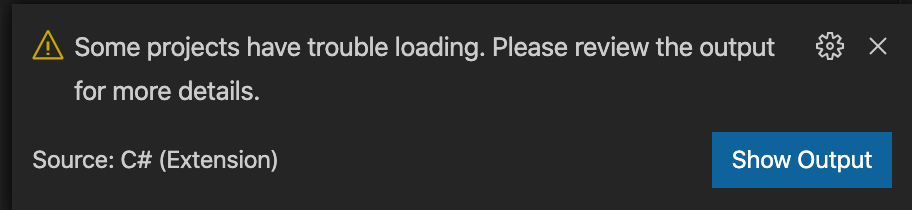
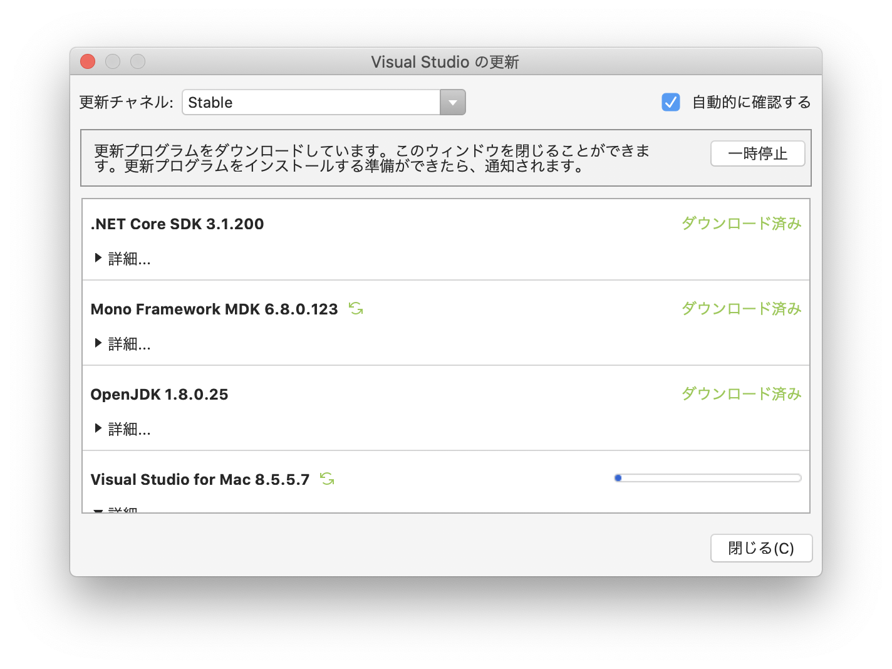

UnityではC#を編集する際、もともとVisual Studio Communityを使うのですが、使い慣れたVisual Studio Code（以下、VS Code）でコーディングしたかったので、Unity側の設定を変えたんです。
問題発生。

おい、なんかエラー（Warning？）吐いてるぞ。
とりあえず「Show Output」で内容を確認してみます。
[fail]: OmniSharp.MSBuild.ProjectLoader
The reference assemblies for .NETFramework,Version=v4.7.1 were not found. To resolve this, install the Developer Pack (SDK/Targeting Pack) for this framework version or retarget your application. You can download .NET Framework Developer Packs at https://aka.ms/msbuild/developerpacks
[fail]: OmniSharp.MSBuild.ProjectManager
Attempted to update project that is not loaded:/hoge/hoge/...「.NETFramework v4.7.1が見つからないぞ！」って言われてるな・・・。これ単体でインストールが必要とかって聞いたことないぞ。っていうか、Macなんだからいらないよな、これ。

王道はアップデートだよね、ってことでVisual Studio Community側の更新を行いました。しばらくUnity触ってなかったから、随分バージョンも古くなってしまっていたようで・・・。
合計するとそこそこファイルサイズが大きいので、なかなかダウンロードするのにも時間がかかりました。
そうしたら。
[info]: OmniSharp.MSBuild.ProjectManager
Update project: Assembly-CSharp直ってる？
本当はもっとたくさんメッセージが表示されるんですが、単純に起動時の実行ログっぽいしエラーっぽいのが表示されなくなったので、良しとします。
アップデートはこまめにね、っていうベタなオチでした、はい。